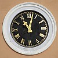
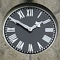

|
 |  |
 |
 |
 |
Aim'-ous l'changement d'heuthe? L'èrtèrgéthie d's hôlouoges au S'tembre, j'y sommes accouôteunmés au mains, mais en 1862 y'avait tout pliein d'Villais tchi 'taient bein mârris auve l'avanch'chie dé l'heuthe.
Ch'est en tchi, au mais d'Mai 1862 i' fut décidé d'mett' la nouvelle hôlouoge au cliochi d'l'Églyise Pârouaîssiale dé St. Hélyi à l'heuthe dé Greenwich, à la pliaiche dé l'heuthe dé Jèrri, viyant qu'les cap'taines des stînmes tchi viageaient s'lon l's empliais du temps des compangnies Angliaîches avaient d'mandé ch't arrangement-là. Mais v'là tchi n'pliaîthait pon ès pilotes et navidgants Jèrriais.
Lé quat' dé Juîn don, chent seize Prîncipaux d'la Pâraîsse app'lîtent eune Assembliée Pârouaîssiale à seule fîn d'èrmett' l'hôlouoge à l'heuthe dé Jèrri - pouortchi faithe d'ité niolîn pouor pliaîthe ès Angliais? Et tchi pus est, eune êlection pouor Seurvillant avait 'té annulée pa'ce qu'les nominnâtions avaient 'té affichies dans la boête ès annonces officielles à onze heuthe trais - par l'hôlouoge d'l'Églyise - mais à chîn minnutes dé onze s'lon l'heuthe dé Jèrri.
Les nominnâtions éthaient deu êt' pliaichies dans la boête auprès onze heuthes - mais la tchestchion en 'tait: tchil onze heuthes?
L'Assembliée décidit qu'i' faut innouother l'heuthe êtrangiéthe, et l'chîn d'Juîn don l'hôlouoge quémenchit à mouontrer l'heuthe dé Jèrri.
Ché n'fut qu'en 1898 qu'les Êtats votîtent eune louai pouor adopter l'heuthe mouoyenne dé Greenwich en Jèrri, et v'là tchi d'vînt l'heuthe officielle d'vièrs quat' heuthes dé l'arlévée du onze dé Juîn..
Tch'est qu'ous en pensez? Aim'thêt'-ous èrvénîn à l'heuthe dé Jèrri, auve eune difféthence dé huit minnutes et vîngt-sept s'gondes du Rouoyaume Unni? Ah mais, ch'n'est pus nos Pâraîsses tchi sont en chèrge dé l'heuthe!
Geraint Jennings
2003
 |
 |  |
 |
 |
Viyiz étout: